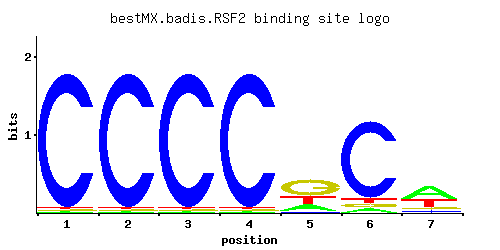

← All factors / TF RECORD
RSF2
YJR127C, ZMS1
Zinc-finger protein involved in transcriptional control of both nuclear and mitochondrial genes, many of which specify products required for glycerol-based growth, respiration, and other functions
01 / RECOMMENDED MATRIX
Best-performing DNA-binding model.

Fisher’s P-value0.2545
Information content11.03
Max PWM score9.8
Recommended cutoff8.2
View and copy the recommended matrices ↘
Position frequency matrix (PFM)
A | 0.01 0.01 0.01 0.01 0.19 0.05 0.50 C | 0.97 0.97 0.97 0.97 0.04 0.85 0.10 G | 0.01 0.01 0.01 0.01 0.53 0.05 0.10 T | 0.01 0.01 0.01 0.01 0.24 0.05 0.30
Position count matrix (PCM)
A | 1 1 1 1 19 5 50 C | 97 97 97 97 4 85 10 G | 1 1 1 1 53 5 10 T | 1 1 1 1 24 5 30
Position weight matrix (PWM)
A | -3.47 -3.47 -3.47 -3.47 -0.52 -1.86 0.45 C | 1.68 1.68 1.68 1.68 -1.50 1.55 -0.59 G | -2.89 -2.89 -2.89 -2.89 1.08 -1.28 -0.59 T | -3.47 -3.47 -3.47 -3.47 -0.29 -1.86 -0.06
02 / COMPARATIVE BENCHMARKS
Alternative candidate matrices 1
Historical matrix candidates from the original ScerTF database. Expand a source to inspect its original logo, scores, and matrix values.
RSF2Foat et. al.P = 1View matrix ↘
03 / EXPERIMENTAL CONTEXT
Gene-level annotations and interactions.
Genes bound in ChIP-chip experiments 1 genes
No Data
Genes affected by TF deletion 1 genes
No Data
Genes supported by both experiments 1 genes
No Data
Predicted TF–TF partners 21 genes
AFT1, AFT2, ARG80, CAT8, GIS1, HAP1, HMS1, MIG1, MIG3, MSN2, MSN4, NRG1, PDR1, RGM1, RPH1, STP1, STP2, SUT1, UME6, USV1, YER130C